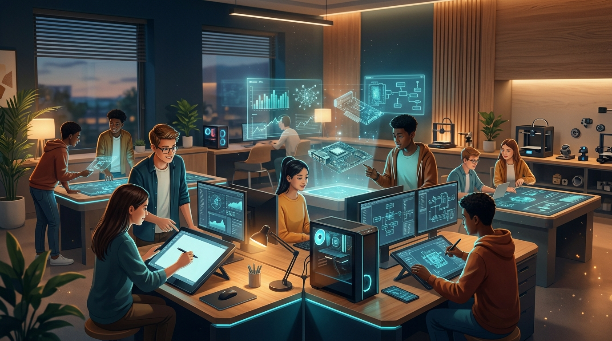

Belajar Informatika Lebih Fokus, Interaktif, & Menyenangkan.
Informatika Learning Hub adalah ruang belajar mandiri satu pintu untuk peserta didik SMK. Pelajari konsep esensial Sistem Komputer, Teknologi Informasi & Komunikasi, serta Data, Informasi, dan Validasinya, simak video bebas iklan, dan kumpulkan poin di Leaderboard kelas!

Peta Materi Pembelajaran
3 Bab Utama • Dilengkapi SimulatorSistem Komputer
Arsitektur Hardware (Input, CPU ALU/CU, RAM/ROM, Output), Sistem Operasi, Brainware, dan siklus pemrosesan instruksi Fetch-Decode-Execute.
Teknologi Informasi & Komunikasi
Integrasi aplikasi perkantoran (Word, Excel, PPT), Mail Merge, OLE, dan pengolahan dataset hidrologi Waduk Riam Kanan Kalimantan Selatan.
Data, Informasi, dan Validasinya
Transformasi data mentah menjadi informasi bermakna, prinsip GIGO, serta 5 prosedur validasi data digital (Type, Range, Format, Presence, Consistency).
Baca ringkasan visual & coba simulator interaktif pada 3 bab Informatika.
Tonton penjelasan konsep & demonstrasi praktikum tanpa gangguan iklan.
Input Nama & Kelas, jawab soal formatif, dan raih skor serta pembahasan langsung.
Pantau peringkat di Google Spreadsheet & tukarkan poin XP dengan reward digital.